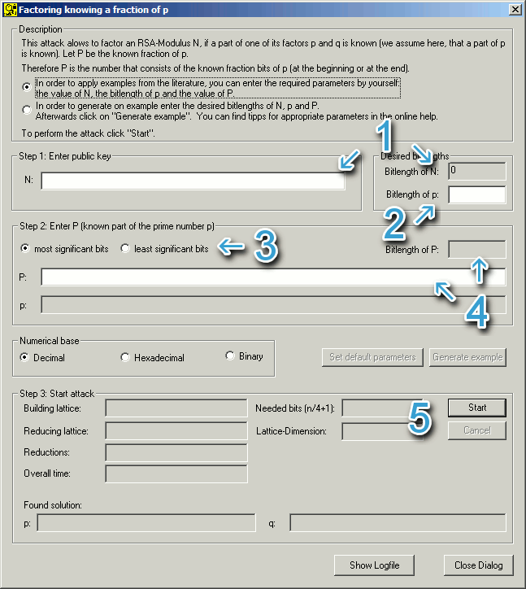
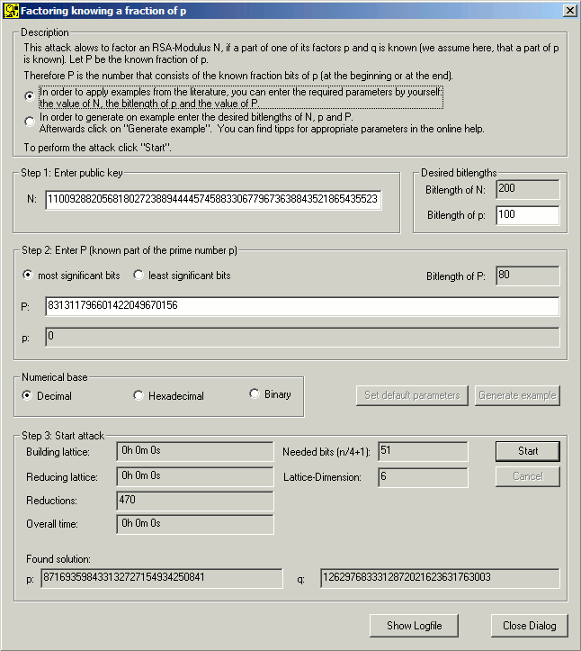

The dialog Factoring-with-a-Hint offers
two different modes, which can be chosen in the upper part of the window:
1. Enter the RSA-modulus N,
the bit length of p
and the known part P
can be entered manually.
2. Enter the bit length of N and of p
and let the program generate a random example.

Steps to proceed:
Depending on the above mentioned choice either
N itself or the bit length of
N can be entered.
The group "Base of numbers" allows to change the representation
of N,
p and P.
In both cases the bit length of p
has to be entered (for this attack the bit length of
p has to be exactly known!).
Consequently it is selected, whether the upper most significant or least
significant bits of p
are known.
Depending on the chosen mode either the known
part P
of p is
entered manually or P
is generated by entering the number of bits known and clicking "Generate
example". Note:
When entering P manually
it has to be identical with
p in its binary representation in e.g. 40 bits. If you choose
option 1 you may want to change to the binary or hexadecimal representation
every once in a while to check, whether the bits are indentical!
The attack is started by clicking the "Start" button.
The section "Attack" provides information about the elapsed time
of the running attack and how many lattice reductions have been completed. After
the attack is finished, the found factors p
and q are
displayed. Furthermore the number of required bits (n
/ 4+1), which is calculated depending on N,
is shown. From the number of known bits also follows the size of the latticebase:
the more bits of one of the factors are known, the smaller the lattice can be.
Example:
Proceed according to option 1:
Attack on a RSA modulus N
with a length of 200 bits:
The attacker enters the publicly known value for N: N = 1100928820568180272388944445745883306779673638843521865435523
In most of the cases both factors have exactly half the length of N.
The same holds here:
Bit length of p:
100
The attacker selects, that the upper most significant bits of p
are known.
He enters P = 831311796601422049670156.
The attack is started by clicking "Start".
Dialog corresponding to this example:

Annotations:
How much of the factor p
of N has
to be known does not depend on the size of
p but on the size of N.
To be able to determine N
of a bit length of n, at least
(n/4) +1 bit have to be known, but this results in a lattice
the size of n,
which is hard to solve from a size of n=128.
When P
and p match
in either their decimal or hexadecimal representation they rarely match exactly
in their binary representation. An attack, however, can only succeed if they
exactly match binary.